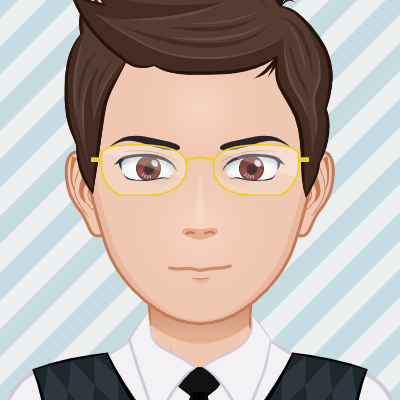

Pelmen Stories Season 1
by
CRedMoon Team
Posted on May 29, 2023 at 12:00 PM
Про
История рассказывает о двух группировках, Oasis и Darkness которых наняли защищать город от врагов. В итоге им поступило задание розыскать опасного террориста и очень сильными способностями. Про это и идёт повествование.
Основной сюжет
Существует 4 группировки Oasis, Darkness, Flame и Forgiven. На момент повествования осталось лишь первые две, им приказано отыскать и устранить опасного террориста которого прозвали "Враг". Он имеет способность превращаться в любого человека, копируя все его способности.
Также существует две разумные рассы: Люди и Треугольники, которые прибыли из другого мира. Наши главные герои находятся в группировке Oasis и среди них есть один треугольник - "Triple Eagle".
Перессказ первой главы
Рассказ начинается с показа основных персонажей - Пельмень, Жир и Треугольник. Они сидят в штаб-квартире пока к ним не приходит сообщение о странных действиях. Жир идёт первым на разведку и видит его младшего брата Бед-Жира, который находится в враждующей группировке и у них начинается битва, в которой Жир проигрывает. Наутро Треугольник и Пельмень идут на поиски друга и сталкиваются с Бед-Жиром и вдвоём побеждают его, связывают и увозят в лабараторию Треугольника и оставляют его на ночь.
Пора домой!

После этого ребята желают перекусить на улице, но на них неожиданно нападают вражеские дроны и крадут на борт главного дрона Жира и Треугольника, тогда Пельмень использует свою основную способность - скорость и закидывает дронов большим количеством камней, тем самым спасая своих друзей. Наступает вечер и все они наконец возвращаются домой.

О блогере

Кроль Милан
Разработчик инди-игр, а также создатель комиксов серии "PELMEN Stories"